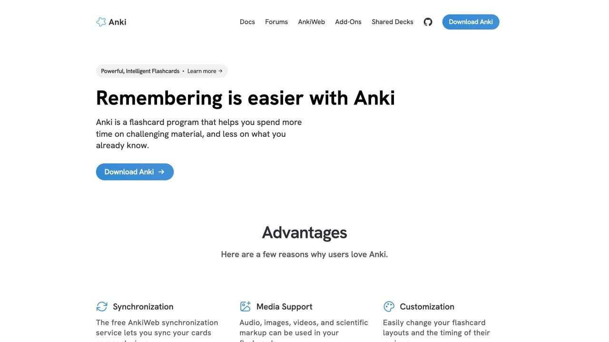

1. La técnica Feynman, con un tutor que te hace de espejo
La técnica Feynman consiste en explicar un concepto con tus propias palabras, como si se lo enseñaras a alguien que no sabe nada del tema — y en el momento en que te trabas o usas jerga sin poder explicarla, has encontrado exactamente el punto que no entiendes de verdad. Un chat de IA es perfecto para esto: le pides que actúe como un alumno curioso, le explicas el concepto, y le pides que te interrumpa con preguntas cada vez que uses un término sin aclararlo.
Quiero explicarte el concepto de [tema] como si fueras un alumno curioso de 15 años que no sabe nada del tema. Reglas para ti: 1. Escúchame explicar y, en cuanto use una palabra técnica sin explicarla en términos simples, interrúmpeme y pregúntame qué significa esa palabra. 2. Si mi explicación tiene un hueco lógico o una parte incompleta, señálalo con una pregunta, no me des tú la respuesta. 3. Al final, dime en qué parte de mi explicación mi comprensión parecía más débil, basándote solo en dónde dudé o simplifiqué de más. Aquí va mi explicación de [tema]: [tu explicación]
2. Preguntas de repaso generadas desde tus propios apuntes
En vez de buscar un examen tipo test genérico sobre el tema, pega tus apuntes reales y pide preguntas basadas exclusivamente en ese contenido. Esto reduce mucho el riesgo de que la IA invente datos — no tiene que recurrir a lo que "sabe" del tema en general, solo trabaja con el texto que le diste — y además repasa justo lo que tu profesor o tu material realmente cubrió, no una versión genérica del tema.
"Genera 10 preguntas de repaso basadas solo en estos apuntes, sin usar información externa. No me des las respuestas todavía."
"Hazme un examen sobre [tema]" — sin apuntes de por medio, la IA rellena con conocimiento general que puede no coincidir con lo que estudiaste.
Un paso más: pide explícitamente preguntas de distinto tipo, no solo memorización literal — "incluye alguna pregunta que me obligue a aplicar el concepto a un caso nuevo, no solo a repetir la definición". Reconocer una definición es mucho más fácil que aplicarla, y un examen real casi siempre exige lo segundo.
3. Que la IA te recuerde cuándo tocaba repasar, no solo qué
La repetición espaciada — repasar un tema con intervalos cada vez más largos, justo antes de que se te olvide — es de las técnicas con más evidencia detrás en investigación sobre memoria a largo plazo, pero solo funciona si de verdad respetas el calendario. Pide a la IA que te genere un calendario de repaso a partir de la fecha de tu examen y los temas que tienes que cubrir: por ejemplo, "tengo el examen el [fecha] y estos 5 temas por repasar, dame un calendario de repaso espaciado, con más frecuencia cerca de los temas que más me cuestan". No sustituye a un gestor de repetición espaciada dedicado, pero para armar un plan rápido sin instalar nada, es suficiente.
«Una IA que te da la respuesta te ahorra cinco minutos hoy. Una IA que te hace preguntas te ahorra media hora la noche antes del examen, cuando ya no hay tiempo de volver a aprenderlo desde cero.
— Redacción El Telar
4. Tarjetas de repaso (flashcards) generadas en segundos
Pega un tema o capítulo y pide tarjetas de repaso en formato pregunta-respuesta corta, pensadas para repetición espaciada (el sistema de repasar cada vez con más tiempo entre repasos, el más efectivo según la investigación sobre memoria a largo plazo). Pide explícitamente que cada tarjeta cubra un único hecho o idea — tarjetas que mezclan varios conceptos son mucho menos efectivas para memorizar que una idea por tarjeta.
5. Cuándo estás usándola para aprender menos, no más
Hay una señal fiable de que te has pasado al lado equivocado: si dejas de intentar responder tú primero y vas directo a preguntar, estás sustituyendo el aprendizaje por la sensación de haber aprendido. La regla práctica más simple es intentar responder o resolver algo tú, con tus propias palabras o tu propio cálculo, antes de pedirle nada a la IA — úsala después para verificar, corregir o ampliar, nunca como primer paso.
Llegas a la IA con un intento propio ya hecho — una respuesta, un cálculo, una explicación — y la usas para contrastar o corregir ese intento.
Copias la pregunta del enunciado directamente en el chat sin haber intentado nada antes — el atajo se siente productivo, pero no deja nada aprendido detrás.

6. Que responda solo con tus apuntes, no con lo que "sabe"
El problema de preguntarle a un chat general sobre tu temario es que mezcla lo que dicen tus apuntes con lo que aprendió en internet, y no te avisa de cuál es cuál. Si tu profesor explicó un concepto con un matiz concreto, o si la normativa de tu oposición cambió el año pasado, la IA puede darte la versión genérica y antigua con total seguridad.
Por eso, para estudiar, funcionan mejor las herramientas que responden solo a partir de los documentos que tú subes, como NotebookLM de Google, o los proyectos con archivos de ChatGPT y Claude. La diferencia importante es que citan el fragmento exacto del que sale cada respuesta, así que puedes ir al apunte original y comprobarlo.
Responde únicamente con la información de los documentos que te he pasado. Reglas: 1. Si la respuesta no está en los documentos, dilo claramente en vez de completarla con conocimiento general. 2. Después de cada afirmación, indica de qué documento y apartado sale. 3. Si dos documentos se contradicen, señálalo. Pregunta: [tu pregunta sobre el temario]
7. Matemáticas y problemas: pide pistas por niveles
En asignaturas de problemas, ver la solución completa da una falsa sensación de haberlo entendido. La alternativa es pedir ayuda graduada: primero una pista pequeña, luego una más concreta y solo al final el paso siguiente. Cada nivel te obliga a intentarlo otra vez.
Un aviso importante: los modelos de lenguaje todavía se equivocan en cálculos, sobre todo con muchos decimales o pasos encadenados, y lo hacen con la misma seguridad con la que aciertan. Úsalos para el razonamiento y comprueba las operaciones con una calculadora o pidiéndoles que ejecuten el cálculo con código, si la herramienta lo permite.
Estoy estudiando [asignatura] y tengo este problema: [enunciado] No me des la solución. Ayúdame así: - Nivel 1: una pista general sobre qué concepto aplicar. - Espera a que yo lo intente. - Nivel 2 (solo si te lo pido): una pista más concreta sobre el primer paso. - Nivel 3 (solo si te lo pido): el siguiente paso resuelto, pero no el resto. Cuando te dé mi resultado, dime si es correcto y, si no, en qué paso me he equivocado sin corregirlo tú.
8. Idiomas: un compañero de conversación que corrige sin cortar
Para un idioma, lo que más falta suele ser práctica de conversación sin vergüenza. Los modos de voz de ChatGPT o Gemini permiten hablar en voz alta, y en texto puedes pedir algo que un compañero humano rara vez hace bien: que te deje terminar y te corrija después, con explicación, solo los errores que se repiten.
Quiero practicar [idioma], nivel [A2/B1/B2...]. Vamos a tener una conversación sobre [tema]. Reglas: 1. Háblame solo en [idioma], con vocabulario de mi nivel. 2. No me corrijas durante la conversación. 3. Cuando escriba "fin", dame una lista con mis 5 errores más importantes, la forma correcta y una regla breve para cada uno. 4. Termina con 5 frases para practicar esos errores.
9. Un plan de estudio que empieza por la fecha del examen
Los planes de estudio fallan casi siempre por lo mismo: se reparten los temas a partes iguales y no se reserva tiempo para repasar ni para los imprevistos. Un chat es bueno haciendo el cálculo inverso desde la fecha del examen si le das datos reales: cuántas horas tienes de verdad cada día y qué temas te cuestan más.
Tengo un examen de [asignatura u oposición] el [fecha]. Temario: [lista de temas]. Los que más me cuestan: [temas]. Tiempo real disponible: [horas] entre semana y [horas] el fin de semana. Hazme un plan día a día hacia atrás desde el examen que: - dedique más tiempo a los temas difíciles, - reserve la última semana solo para repasar y hacer simulacros, - deje un día libre a la semana para recuperar retrasos, - incluya repasos espaciados de cada tema (a los 2, 7 y 21 días). Preséntalo en una tabla.
Octubre de 2026: dos datos que afectan a cómo estudias con IA
Un estudio apoya la regla de «intenta primero». Un trabajo de la Universidad de California en Berkeley, con 1.222 participantes en tres experimentos aleatorizados, concluye que bastan unos 10 minutos de ayuda de una IA para que, al quitársela, la gente rinda peor y abandone antes. Es un estudio con tareas muy concretas, no una prueba de daño a largo plazo, así que no lo uses para asustar. Sí refuerza lo que ya decía la sección 5: usa la IA después de intentarlo tú. Lo explicamos en esta noticia.
Gemini gratis cambia. Desde el 9 de octubre, con una cuenta personal sin suscripción de Google AI solo se puede elegir el modelo Flash-Lite en la app de Gemini, según la página de ayuda de Google. Para estudiar con apuntes (resumir, preguntar, hacer tarjetas) suele bastar, pero para razonar problemas largos notarás la diferencia. Detalles en esta noticia.
| Si estudias… | Prueba primero | Y comprueba |
|---|---|---|
| Temario con apuntes propios | Un cuaderno de fuentes que cite de dónde sale cada respuesta (Gemini Notebook, proyectos con archivos) | Que la cita coincida con tu apunte original |
| Problemas de mates o física | Pistas por niveles, sin ver la solución | Los cálculos, con calculadora o con código |
| Idiomas | Conversación en voz con corrección al final | Que las reglas que te da coinciden con tu libro o profesor |
| Oposiciones o normativa que cambia | Pegar el texto legal vigente y preguntar sobre él | La versión vigente en el BOE: la IA puede conocer una antigua |
Un recordatorio sobre fuentes: si la IA te da una cita o una referencia bibliográfica, ábrela antes de usarla. Los chatbots inventan referencias con aspecto real; en la guía de alucinaciones hay datos de cuántos casos reales se han documentado.
10. Las normas de tu centro y los detectores de IA
Antes de usar IA en un trabajo que se va a evaluar, mira qué dice la guía docente o el reglamento de tu centro: cada vez más universidades y profesores fijan qué usos están permitidos, cuáles hay que declarar y cuáles cuentan como plagio. Lo que se permite en una asignatura puede estar prohibido en la de al lado.
Suele estar permitido
Pedir explicaciones, generar preguntas de repaso, corregir la ortografía o pedir opinión sobre la estructura de un trabajo que has escrito tú.
Suele haber que declararlo
Usar IA para buscar fuentes, resumir artículos o reformular partes del texto. Lo seguro es indicarlo en una nota, como cualquier otra ayuda.
Los detectores no son fiables
Las herramientas que dicen detectar textos escritos con IA dan falsos positivos, sobre todo con estudiantes que escriben en un idioma que no es el suyo. Si te acusan, guardar tus borradores y el historial de versiones es tu mejor prueba: lo detallamos en cómo saber si un texto lo ha hecho una IA.
Convierte tus apuntes en un podcast con Gemini Notebook
La herramienta de Google que conocías como NotebookLM aparece ahora como Gemini Notebook. Es un asistente de investigación que trabaja solo con las fuentes que tú le das, y cita de dónde saca cada respuesta.
Cómo usarla para estudiar
- Entra en notebooklm.google con tu cuenta de Google y crea un cuaderno por asignatura.
- Añade tus fuentes: PDF, páginas web, vídeos de YouTube, audios (por ejemplo, una clase grabada) o documentos y presentaciones de Google.
- Genera un resumen de audio para escuchar el tema como si fuera un podcast mientras caminas o vas en transporte.
- Pide un mapa mental, una guía de estudio, tarjetas o un cuestionario para repasar.
- Pregunta tus dudas en el chat: cada respuesta lleva citas a tus fuentes para que compruebes el dato.
Según su centro de ayuda, admite más de 80 idiomas y también genera resúmenes en vídeo, infografías y presentaciones.
Lo honesto: es gratuita con límites de uso; hay planes superiores de pago. Necesitas cuenta de Google y tener la edad mínima de tu país. Y aunque cite fuentes, puede resumir mal: contrasta lo importante con tus apuntes.
Kiwix: la Wikipedia en el bolsillo, sin conexión
No todo el estudio necesita IA ni internet. Kiwix es una aplicación gratuita y de código abierto (GPL-3.0), mantenida por una organización sin ánimo de lucro, que permite descargar la Wikipedia y otros contenidos de referencia para leerlos sin conexión.
Cómo usarla
- Descarga Kiwix desde kiwix.org o desde la tienda de tu dispositivo. Hay versiones para Android, iPhone, iPad, Mac, Windows y Linux.
- En la biblioteca de la app, busca «Wikipedia» y elige el idioma (por ejemplo, español).
- Escoge el tamaño: completa con imágenes, sin imágenes o solo artículos principales.
- Descárgala con wifi. A partir de ahí, puedes buscar y leer artículos en modo avión.
Además de la Wikipedia, hay otros contenidos disponibles en la biblioteca, como diccionarios o guías, útiles para viajes, colegios o lugares con mala conexión.
Lo honesto: la Wikipedia completa con imágenes ocupa decenas de gigas. Si tu móvil va justo de espacio, empieza por una versión reducida. Los contenidos no se actualizan solos: descarga una versión nueva de vez en cuando.
Código: github.com/kiwix
Anki + IA: memoriza tus apuntes con repetición espaciada
Anki es un programa de tarjetas basado en la repetición espaciada: en lugar de repasar todo cada día, te muestra cada tarjeta justo cuando estás a punto de olvidarla. Es muy usado para idiomas, oposiciones o medicina.
Cómo empezar
- Descárgalo desde apps.ankiweb.net. La versión de ordenador (Windows, macOS y Linux) es gratuita.
- Crea un mazo por asignatura y añade tarjetas con pregunta y respuesta. Puedes incluir imágenes, audio y fórmulas.
- Cada día, repasa las tarjetas pendientes y pulsa «Otra vez», «Difícil», «Bien» o «Fácil» según lo que recuerdes.
- Activa la sincronización gratuita de AnkiWeb para estudiar también en el móvil.
El truco con IA
Pega un tema de tus apuntes en Claude o ChatGPT y pídele: «Conviértelo en 20 tarjetas de pregunta y respuesta, una idea por tarjeta, en formato para importar en Anki (pregunta;respuesta)». Revisa las tarjetas antes de importarlas: la IA puede equivocarse.
Lo honesto: en Android, AnkiDroid es gratuita; la app oficial para iPhone, AnkiMobile, es de pago y financia el proyecto. El método solo funciona si eres constante: mejor diez minutos diarios que dos horas un domingo.
Código: github.com/ankitects/anki
Anthropic Academy: cursos oficiales de Claude con certificado
Si quieres aprender a usar la IA con método, Anthropic, la empresa que desarrolla Claude, ofrece su propia plataforma de cursos: Anthropic Academy.
Por dónde empezar
- Entra en anthropic.skilljar.com y crea tu cuenta.
- Apúntate a Claude 101 (en su día figuraba como gratuito; confírmalo en la plataforma): explica qué es Claude, cómo tener tu primera conversación, cómo obtener mejores resultados y ejemplos de uso por profesión. Termina con un certificado de finalización.
- Sigue con el curso que encaje contigo.
Otros cursos del catálogo
- Claude Code 101 y Claude Code in Action: programar con Claude Code en el día a día.
- AI Fluency: Framework & Foundations: colaborar con sistemas de IA de forma eficaz, ética y segura.
- Introduction to Claude Cowork: trabajar con Claude sobre tus archivos y proyectos.
- Para desarrolladores: Building with the Claude API e Introduction to Model Context Protocol.
Lo honesto: los cursos están en inglés. Revisa en la plataforma si el curso es gratuito y qué incluye antes de inscribirte; el catálogo también lista cursos como «AI Fluency for Students» y «AI Capabilities and Limitations», que encajan con esta guía. Un certificado de finalización no es un título oficial, pero demuestra que has hecho la formación.
Generative AI for Beginners: el curso gratuito de Microsoft
Si quieres aprender cómo funciona la IA generativa con un temario ordenado, Microsoft publica en GitHub Generative AI for Beginners, un curso gratuito (licencia MIT) de 21 lecciones creado por sus Cloud Advocates.
Cómo está organizado
- Cada lección trata un tema independiente, así que puedes empezar por la que más te interese.
- Las lecciones «Learn» explican un concepto de IA generativa.
- Las lecciones «Build» explican un concepto y lo aplican con código en Python y TypeScript.
- Todas incluyen una sección «Keep Learning» con recursos para profundizar.
Cómo seguirlo en español
- Entra en el repositorio y abre la traducción al español (carpeta
translations/es). Hay más de 50 idiomas. - Empieza por la lección de configuración del curso si vas a hacer las prácticas.
- Si solo quieres entender los conceptos, lee las lecciones «Learn» sin instalar nada.
Lo honesto: las prácticas con código necesitan acceso a un proveedor de modelos (Azure OpenAI, OpenAI u otros), que puede tener coste. Las traducciones son automáticas y alguna frase puede sonar rara.
Repositorio: github.com/microsoft/generative-ai-for-beginners
Zotero: citas y bibliografía sin perder una semana
La IA te ayuda a entender un tema, pero tus trabajos necesitan fuentes reales y bien citadas. Zotero es una herramienta gratuita y de código abierto para recoger, organizar, anotar, citar y compartir fuentes.
Cómo usarlo
- Descárgalo desde zotero.org (Mac, Windows, Linux, iOS y Android) e instala el conector para tu navegador.
- Cuando estés en un artículo, libro o web, pulsa el botón del conector para guardar la referencia (y el PDF si está disponible).
- Organiza las fuentes en colecciones y etiquetas, y anota los PDF.
- En Word, LibreOffice o Google Docs, usa el complemento de Zotero para insertar citas mientras escribes.
- Al final, genera la bibliografía en el estilo que te pidan: hay más de 9.000.
Cuidado con la IA: los chatbots a veces inventan referencias que parecen reales. Guarda en Zotero solo fuentes que hayas abierto y comprobado.
Lo honesto: revisa los datos que importa (autores, año, título), porque a veces llegan incompletos. La sincronización gratuita tiene un límite de espacio; el almacenamiento extra es de pago.
Enlace oficial: www.zotero.org